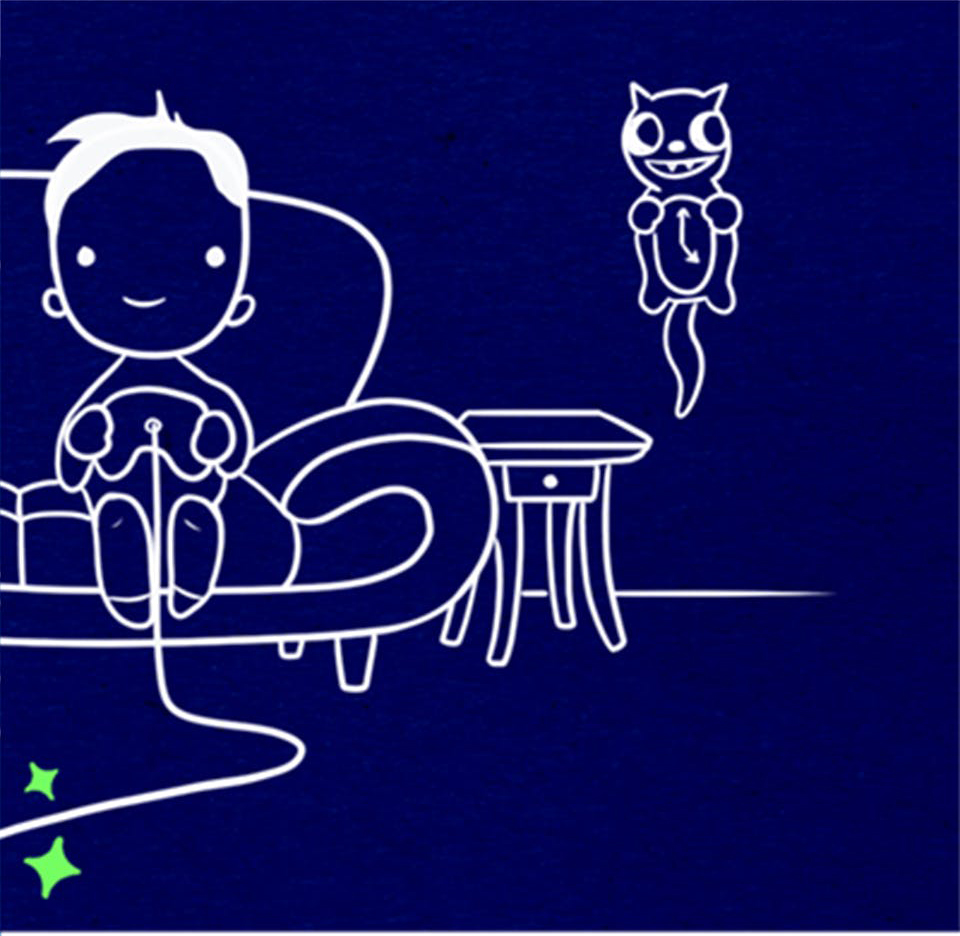
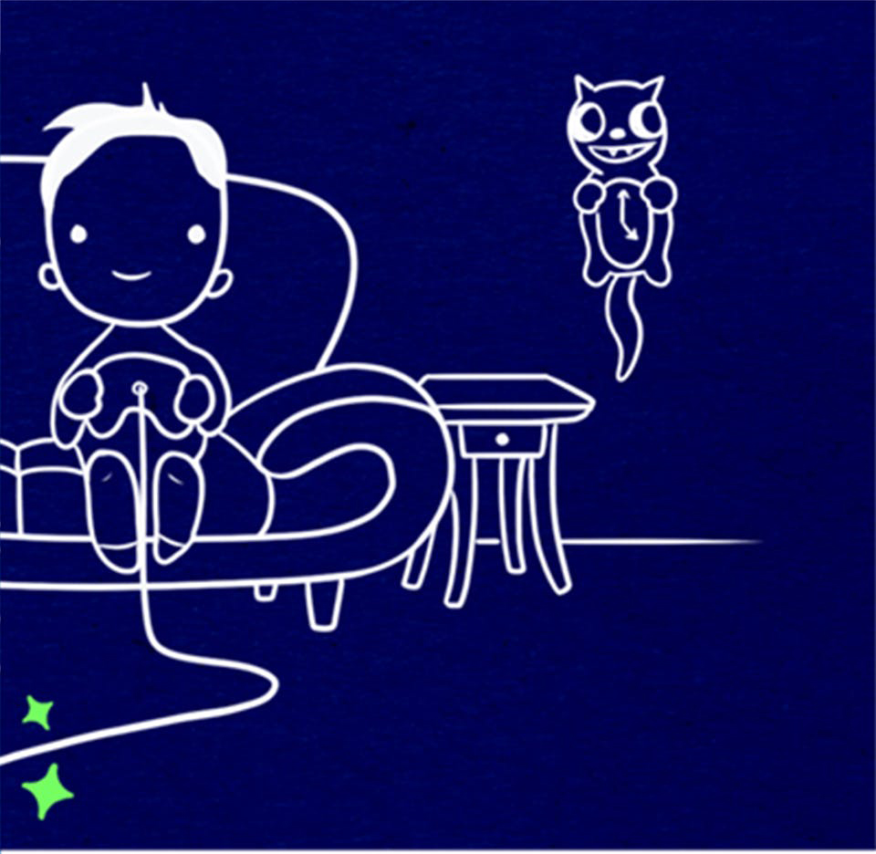

리모트 플레이
 

리모트 플레이 기능
리모트 플레이 가정용 WiFi 네트워크를 통해 PC, Mac, 또는 PlayStation Vita로 게임을 스트리밍하세요. PC 및 Mac용 리모트 플레이 앱을 이용하면 좋아하는 PS4 게임을 노트북이나 데스크톱 컴퓨터로 스트리밍할 수 있습니다. DUALSHOCK 4 무선 컨트롤러를 컴퓨터의 USB 단자에 연결하기만 하면 가정용 WiFi 네트워크를 통해 PS4 홈 화면과 게임을 스트리밍할 수 있습니다. 확장 스토리지 외장 드라이브로 게임 라이브러리를 확장하고, PlayStation Plus의 저장 데이터 보관 서비스로 저장 파일을 백업하세요. PlayStation 4는 USB 3.0을 통한 외부 저장 장치 추가를 지원하여, 다운로드 게임 컬렉션에 따라 더 큰 저장 용량을 확보할 수 있습니다. 다양한 게임을 저장하고 구성할 수 있도록 최대 8TB의 USB 저장 장치 확장을 지원합니다. 또한, PlayStation Plus 저장 데이터 보관 서비스를 통해 클라우드 스토리지에 게임의 저장 데이터를 자동으로 백업할 수 있습니다. 데이터 이동 기존 콘솔에 저장된 게임 저장 데이터, 개인 설정 및 다운로드한 콘텐츠 등 모든 데이터를 새 콘솔로 쉽게 복사할 수 있습니다. 유선 네트워킹 케이블, 가정용 라우터 및 인터넷 접속이 필요합니다. 절전 모드 PS4를 일정 시간 조작하지 않았을 때 자동으로 대기 모드로 전환되거나 전원이 꺼지게 되는 시간을 설정할 수 있습니다. 다음 게임 플레이를 위해 DUALSHOCK 4 무선 컨트롤러를 충전해놓기 위해 대기 모드에서 USB 단자가 활성 상태로 유지되는 시간도 설정이 가능합니다. 게임 다운로드를 대기를 위해서 모바일 기기의 PlayStation App으로 원격으로 전원을 켜도록 설정할 수 있습니다. 수퍼샘플링 모드 PS4 Pro 소유자는 4KTV가 없어도 수퍼샘플링 모드로 향상된 비주얼을 즐길 수 있습니다. "PS4 Pro 향상"을 지원하지 않는 게임에서도 이 모드를 사용하면 게임을 더 높은 해상도로 렌더링한 다음 1080p로 다운스케일링하여 선명도를 향상시킵니다. 특정 게임에서는 해당 모드를 지원하지 않을 수 있습니다. 펌웨어 업데이트 PlayStation 4를 최신 펌웨어 버전으로 업데이트하여 최신 기능 및 업데이트를 추가하고, 게임의 다양한 온라인 기능 및 멀티플레이 기능을 즐겨보세요. 시스템 설정에서 자동으로 시스템 소프트웨어 업데이트가 다운로드되도록 설정할 수 있습니다.